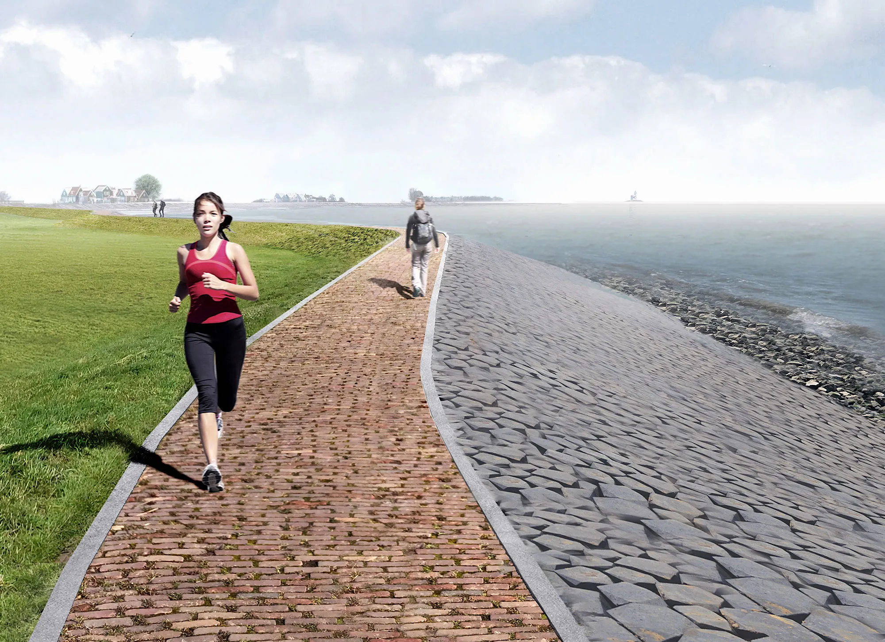

Het idyllische Marken breidt uit met twee moderne werven
Hof van Marken, een aannemerscombinatie van de Vries & van de Wiel en JLD Contracting, gaat de West- en Zuidkade van de dijk rond Marken buitenwaarts versterken.
De combinatie is winnaar van de aanbesteding die Rijkswaterstaat heeft uitgeschreven voor de uitvoering van de dijkversterking. De werkzaamheden starten naar verwachting in het voorjaar van 2023.
De tijd tot aan de start van de dijkversterking gebruiken de aannemerscombinatie en Rijkswaterstaat om vergunningen aan te vragen. Ook om werkzaamheden af te stemmen met de inwoners en ondernemers en het ontwerp te optimaliseren.
Als onderdeel hiervan zullen er in 2022 2 proefvakken worden aangelegd. Met deze proefvakken kan worden vastgesteld dat het ontwerp in de praktijk uitpakt zoals bedacht. Wanneer de werkzaamheden gereed zijn, is mede afhankelijk van de planning van de aannemer. Dit zal zijn tussen 2025 en 2027. Marken is na de realisatie van de dijkversterking de komende 50 jaar beschermd tegen overstromingen.
Omgeving nauw betrokken
Tijdens de planvormingsfase van het project zijn bewoners nauw betrokken bij het ontwerpproces. In 2016 is in samenwerking met bewoners gekozen voor een buitenwaartse dijksterking. In 2018 startte de voorbereiding van de realisatiefase. In 2019 was er mogelijkheid tot inspraak op besluiten en vergunningen.
Bij de start van de aanbesteding in oktober 2020 heeft Rijkswaterstaat via een online marktplein de opdracht uitgezet voor uitvoering van het project. Daarop hebben 5 aannemers interesse getoond en zich aangemeld. Tot eind mei 2021 heeft Rijkswaterstaat verschillende gespreksrondes (dialoogsessies) georganiseerd, waarin geïnteresseerde aannemers vragen konden stellen. In totaal zijn er circa 250 vragen gesteld. Eind juni 2021 deden 4 partijen een aanbieding voor deze opdracht. Op 30 augustus 2021 werd het werk voorlopig gegund aan Hof van Marken. Na het verlopen van de bezwaartermijn is de gunning nu definitief.
Nieuwe dijk tegen de bestaande dijk
De dijk om Marken aan de West- en Zuidkade voldoet niet meer aan de huidige waterveiligheidsnormen. Delen van de dijk hebben stabiliteitsproblemen. Daarnaast is de dijk te laag en is de steenbekleding op veel plekken niet stevig genoeg. Daarom wordt buitendijks, tegen de bestaande dijk, een nieuwe (hogere) dijk aangelegd. Daarna wordt de bestaande dijk weggehaald, waarbij zoveel mogelijk materialen uit de bestaande dijk worden hergebruikt in de nieuwe dijk.
Rijkswaterstaat ziet de dijkversterking als een uitdagend project, gezien de strenge criteria op gebied van waterveiligheid, kwaliteit en draagvlak in de omgeving. Daarnaast dient de nieuwe dijk te passen bij het cultuurhistorisch karakter, het landschap en de natuur op en rond Marken.
Gelijktijdig met de dijkversterking worden er recreatieve voorzieningen aangelegd, zoals het aanleggen van een nieuw strand op de Noordkade en een ligweide bij de Bukdijk.